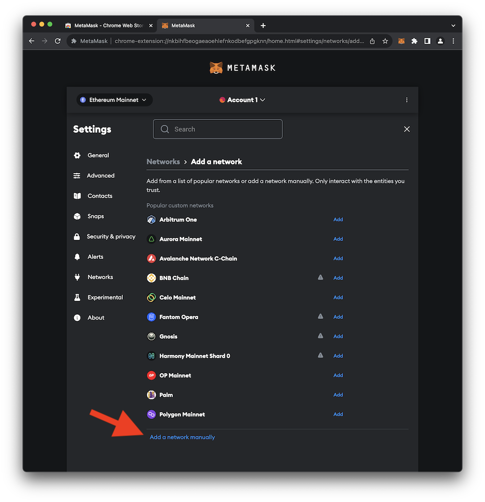
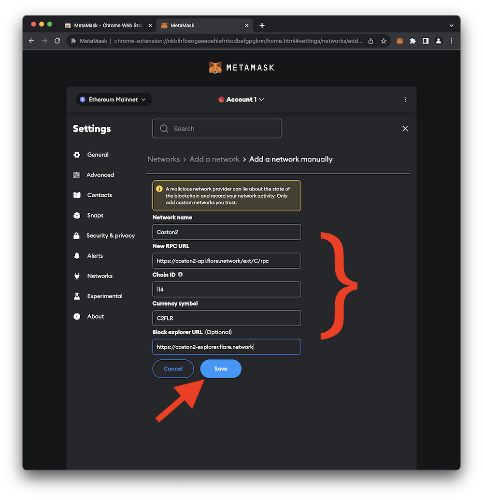
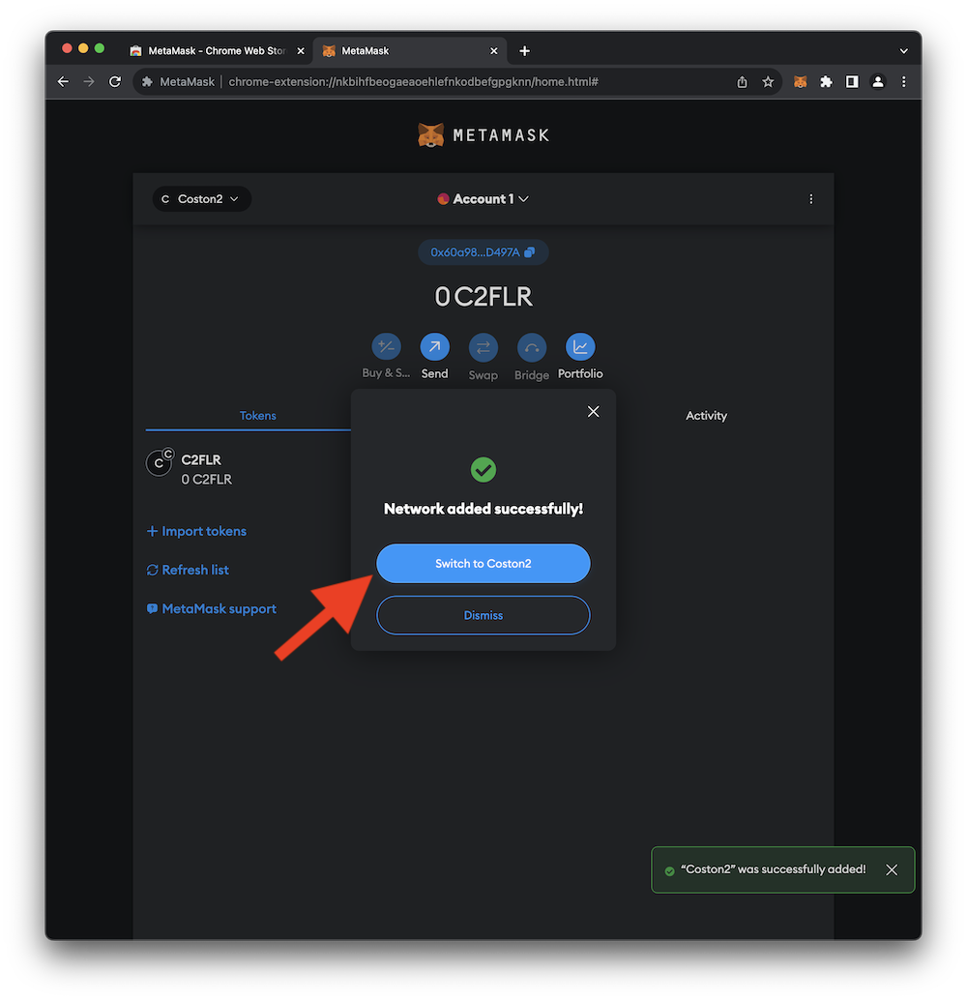
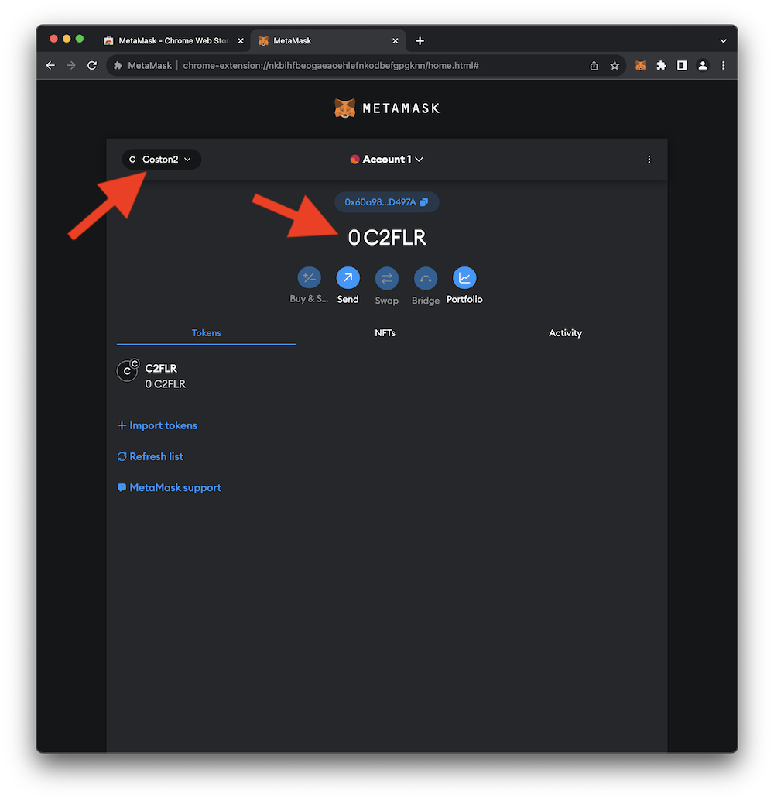

MetaMask Configuration
By default, MetaMask connects to the Ethereum Mainnet blockchain. The Ethereum Mainnet is home to the Ether (ETH) cryptocurrency. Since transaction times on Ethereum can be a bit unpredictable (and occasionally sluggish), it's not well-suited for a time-limited workshop. Instead, of Ethereum, this guide utilizes the Flare Network project.
During development, and for the purposes of this guide, it wouldn't be wise to interact with a network that holds real-world value. There are many test networks associated with various crypto projects (including both Ethereum and the Flare Network). A test network (a.k.a. a testnet) is an instance of a blockchain network used for testing and development. Testnet tokens are distinct from their mainnet counterparts and hold no real-world value. These testnet tokens can be acquired for free from distribution services called faucets.
This portion of the guide walks through the process of configuring MetaMask to connect to Flare Network's testnet called Coston2. The settings for the Flare Network Coston2 testnet are located here. The steps below describe how to set up access to this blockchain in MetaMask.
Selecting a Network
- To get started, open the MetaMask browser extension and click on the network selection button as shown in the image below.

- In the small pop-up window, click Add network.

- Next, click Add a network manually.
 - Populate the Network Name, New RPC URL, Chain ID, Currency symbol, and Blockchain explorer URL with the following values.
When complete, your settings should match those in the image below. Click Save to add the network.  - You should see a message indicating that the network was successfully added. Click Switch to Coston2 to use the Coston2 testnet.
 - MetaMask should now show that you're connected to Coston2 and that you have zero C2FLR tokens.
